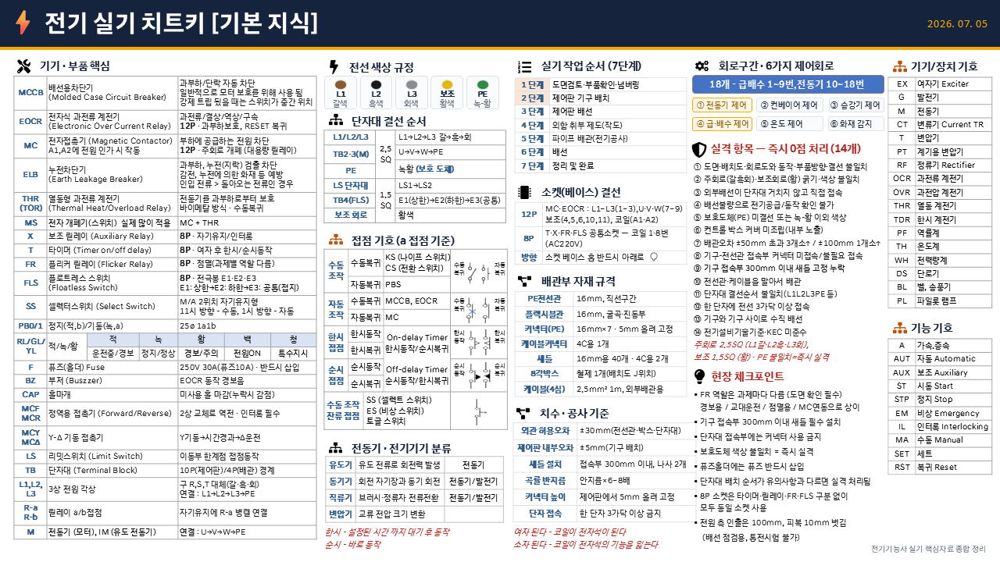
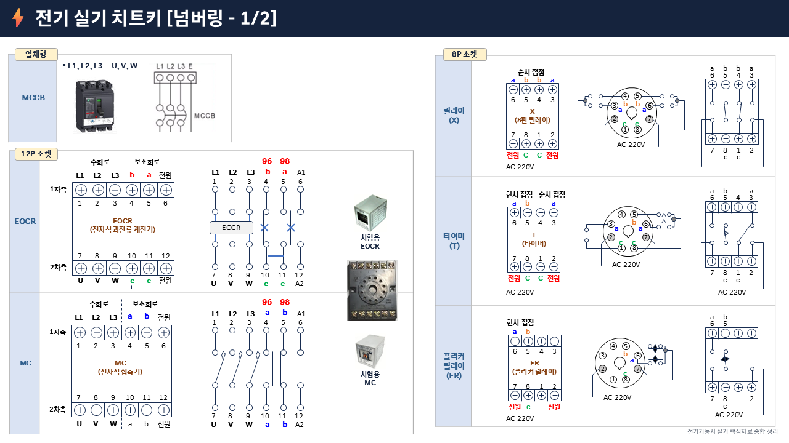
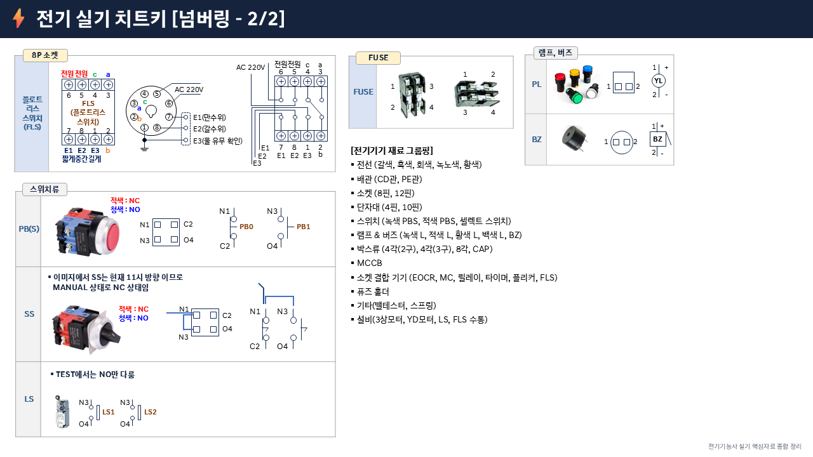
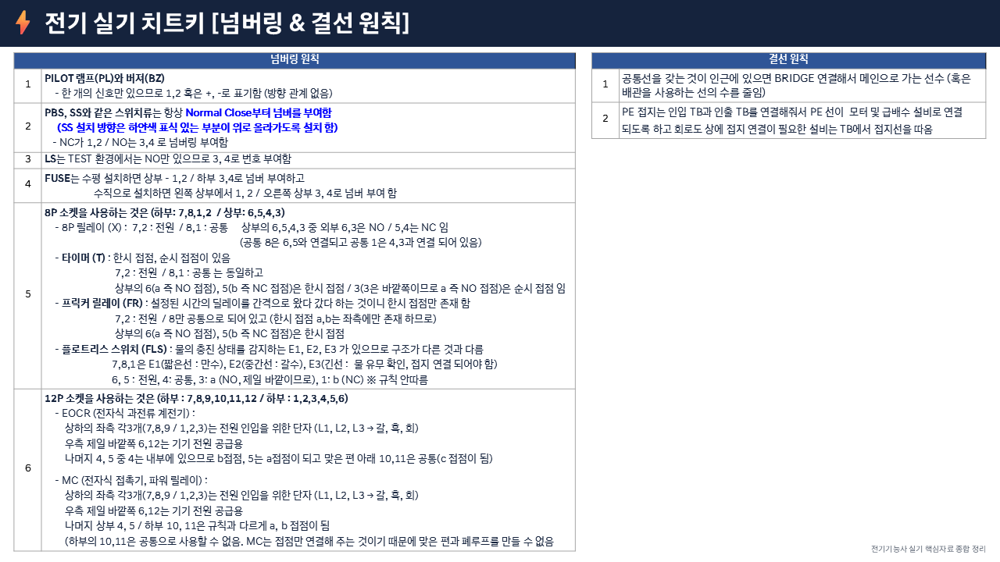

| 기호 | 명칭 | 규격 / 특징 |
|---|---|---|
| MCCB | 배선용차단기 | 3P 250V 30A · 과부하/단락 자동차단 |
| ELB | 누전차단기 | 누전(누설전류) 검출 차단 |
| THR (TOR) | 열동형 과전류 계전기 | 바이메탈 방식 · 수동복귀 |
| EOCR | 전자식 과전류 계전기 | 12P · 과부하 보호, RESET 복귀 |
| MC | 전자접촉기 | 12P · 주회로 개폐 |
| X | 보조릴레이 | 8P · 자기유지/인터록 |
| T | 타이머 (on/off delay) | 8P · 여자 후 한시/순시동작 |
| FR | 플리커 릴레이 | 8P · 점멸 (과제별 역할 다름 — 도면 확인 필수) |
| FLS | 플로트레스 스위치 | 8P · 전극봉 E1·E2·E3 |
| SS | 셀렉터스위치 | M/A 2위치 자기유지형 |
| PB0 / PB1 | 정지(적,b) / 기동(녹,a) | 25ø 1a1b |
| RL / GL / YL | 적 / 녹 / 황 표시등 | M1운전(적) / M2운전(녹) / 경보(황) |
| F | 퓨즈(홀더) | 250V 30A (퓨즈 10A) · 반드시 삽입 |
| BZ | 부저 | EOCR 동작 경보음 |
| CAP | 홀마개 | 미사용 홀 마감 (누락 시 감점) |
| MCF / MCR | 정역용 접촉기 | 2상 교체로 역전 · 인터록 필수 |
| MCY / MCΔ | Y-Δ 기동 접촉기 | Y기동 → 시간경과 → Δ운전 |
| L/S | 리밋스위치 | 이동부 한계점 접점동작 |
| TB | 단자대 | 10P(제어판) / 4P(배관) 경계 |
| L1, L2, L3 | 3상 전원 각상 | 구 R, S, T 대체 (갈·흑·회) |
| R-a / R-b | 릴레이 a/b 접점 | 자기유지에 R-a 병렬 연결 |
| 구분 | 제어회로 |
|---|---|
| 급배수 1~9번 | ④ 급·배수 제어 ⑤ 온도 제어 ⑥ 화재 감지 |
| 전동기 10~18번 | ① 전동기 제어 ② 컨베이어 제어 ③ 승강기 제어 |
| 분류 | 설명 | 용도 |
|---|---|---|
| 유도기 | 유도 전류로 회전력 발생 | 전동기 |
| 동기기 | 회전 자기장과 동기 회전 | 전동기 / 발전기 |
| 직류기 | 브러시·정류자 전류전환 | 전동기 / 발전기 |
| 변압기 | 교류 전압 크기 변환 | — |
| 선로 | 색상 | 굵기 | 비고 |
|---|---|---|---|
| L1 | 갈색 | 2.5 SQ | 주회로 |
| L2 | 흑색 | 2.5 SQ | 주회로 |
| L3 | 회색 | 2.5 SQ | 주회로 |
| 보조 | 황색 | 1.5 SQ | 제어회로 |
| PE | 녹-황 | — | 불일치 = 즉시 실격 |
| 항목 | 기준 |
|---|---|
| 외관 허용오차 | ±30mm (전선관·박스·단자대) |
| 제어판 내부오차 | ±5mm (기구 배치) |
| 새들 설치 | 접속부 300mm 이내, 나사 2개 |
| 곡률 반지름 | 안지름 × 6~8배 |
| 커넥터 높이 | 제어판에서 5mm 올려 고정 |
| 단자 접속 | 한 단자 3가닥 이상 금지 |
| 전원 측 인출 | 100mm, 피복 10mm 벗김 (통전시험 불가) |
| 단자대 | 결선 순서 |
|---|---|
| TB1 (전원) | L1 → L2 → L3 → PE |
| TB2·3 (전동기) | U → V → W → PE |
| LS 단자대 | LS1 → LS2 |
| TB4 (FLS) | E1(상한) → E2(하한) → E3(공통) |
| 소켓 | 해당 기기 | 결선 내용 |
|---|---|---|
| 12P | MC · EOCR | L1~L3 (1~3번) · U·V·W (7~9번) · 보조 (4,5,6,10,11번) · 코일 (A1·A2) |
| 8P | T · X · FR · FLS | 코일 1·8번 (AC 220V) — 공통 소켓 동일 규격 |
| 주의 | 내용 |
|---|---|
| 소켓 방향 | 베이스 홈 반드시 아래로 |
| 8P 소켓 | 타이머·릴레이·FR·FLS 구분 없이 모두 동일 소켓 사용 |
| 자재 | 규격 | 비고 |
|---|---|---|
| PE 전선관 | 16mm | 직선구간 |
| 플렉시블관 | 16mm | 굴곡·진동부 |
| 커넥터 (PE) | 16mm × 7개 | 5mm 올려 고정 |
| 케이블 커넥터 | 4C용 1개 | |
| 새들 | 16mm용 40개 · 4C용 2개 | |
| 8각박스 | 철제 1개 | 배치도 J위치 |
| 케이블 (4심) | 2.5mm² 1m | 외부배관용 |
도면을 정독하여 회로 구성(주회로·제어회로)을 파악하고, 부품 목록과 실물을 대조해 누락 여부를 확인한다.
각 부품에 도면 번호(넘버링 스티커)를 부착해 배선 시 혼선을 방지한다.
도면의 배치도를 기준으로 MCCB·MC·THR·TB 등을 제어판에 고정(나사 체결)한다.
중량 기기는 하단, 조작·표시 기기는 상단에 배치하여 중심을 낮추고 작업 편의성을 높인다.
덕트 내 배선 → 단자대(TB) 결선 순서로 진행하며, 전선은 넘버링 순서대로 정리한다.
압착 단자(Y형·O형)를 사용해 접속부를 견고히 하고, 배선 완료 후 도면과 대조 점검한다.
외함(박스)에 전선관 인입구·부품 취부 위치를 도면 치수대로 펀칭·드릴 가공한다.
버(burr) 제거 후 그로밋·부싱을 끼워 전선 피복 손상을 방지한다.
금속관(후강·박강) 또는 합성수지관을 도면 경로에 따라 절단·굽힘 가공하여 고정한다.
관 끝에 부싱·로크너트를 체결하고, 새들·행거로 지지 간격(1.5 m 이하)을 준수한다.
입선 도구(피쉬 테이프)로 전선을 관 내에 통선하고, 양단에 넘버링 마킹 후 단자대에 결선한다.
전선 색상(L1·L2·L3·N·PE)을 규정대로 구분하고, 접지선(녹/황)은 최우선으로 연결한다.
불필요한 전선 끝단 처리·결박(타이랩), 공구·부품 잔재물 제거 후 외함 도어를 닫는다.
통전 전 절연 저항(IR) 측정(500 V 메거, 1 MΩ 이상)으로 이상 유무를 최종 확인한다.
도면과 실제 결선·부품 방향·동작 순서 중 하나라도 다르면 즉시 실격 처리된다.
배치도·회로도·제어회로 모두 도면과 100% 일치해야 하므로 배선 전 반드시 재확인한다.
주회로는 갈·흑·회(2.5mm²), 보조회로는 황(1.5mm²)으로 구분해야 한다.
색상·굵기 중 하나라도 규정과 다르면 실격이므로 전선 선택 시 재확인한다.
외부 배선(박스 밖으로 나가는 전선)은 반드시 단자대(TB)를 거쳐야 한다.
단자대를 건너뛰고 기기에 직접 접속하면 즉시 실격이다.
전기 공급 또는 회로 동작 확인이 불가능한 상태는 배선불량으로 간주해 즉시 실격 처리된다.
통전 전 도면 대조 점검 및 저항 확인으로 단선·합선 여부를 반드시 사전 검출한다.
PE(접지)선 미결선 또는 녹-황 이외 색상 사용 시 즉시 실격이다.
접지선은 가장 먼저 결선하고, 색상(녹/황 줄무늬)을 반드시 확인한다.
작업 완료 후 컨트롤 박스 커버를 조립하지 않아 내부가 노출되면 즉시 실격이다.
마감 전 나사 누락 여부까지 확인하고, 커버 체결을 최종 단계로 습관화한다.
±50 mm 초과 3개소 이상이거나 ±100 mm를 1개소라도 초과하면 즉시 실격이다.
배관 전 도면 치수를 줄자로 반드시 실측하고, 굽힘 가공 후 재확인한다.
기구와 전선관 접속부에 커넥터 미접속 또는 불필요한 커넥터 접속 시 실격이다.
커넥터 체결 후 손으로 당겨 빠지지 않는지 확인하고, 여분 접속은 제거한다.
기구 접속부로부터 300 mm 이내에 새들(고정 클램프)을 반드시 설치해야 한다.
새들 미설치 1개소만으로도 실격이므로 배관 후 전체 접속부를 순서대로 점검한다.
전선관이나 케이블을 코일 형태로 말아서 배관하면 즉시 실격 처리된다.
여분 길이는 절단하여 정리하고, 곡률 반경 기준(관 내경의 6배 이상)을 준수한다.
단자대의 L1·L2·L3·PE·N 결선 순서가 도면 또는 유의사항과 다르면 즉시 실격이다.
결선 전 단자대 배치도를 다시 확인하고, 완료 후 번호 순서대로 재점검한다.
하나의 단자에 전선 3가닥 이상 접속 시 접촉 불량·과열 위험으로 즉시 실격이다.
3가닥 이상이 필요한 경우 점퍼선 또는 단자대 추가로 분기 처리한다.
기구와 기구 사이를 수직으로 가로질러 배선하면 유지보수 불가로 즉시 실격이다.
배선 경로는 덕트 또는 외벽을 따라 우회하도록 계획하고 도면과 대조한다.
KEC 및 전기설비기술기준에 정한 이격거리·접지·보호 규정 위반 시 즉시 실격이다.
시험 전 KEC 핵심 규정(접지 종류, 전선 색상, 보호 협조)을 반드시 숙지한다.



